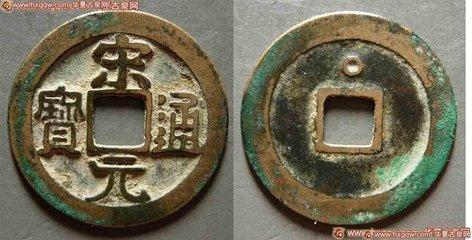
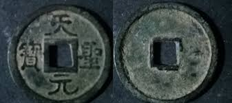

🪙 Tiền Trung Quốc lưu hành tại Việt Nam
Hành trình tiền tệ từ Bắc thuộc đến thời kỳ giao thương - Cuộn ngang để khám phá

Nhà Tần
Bán Lượng Tiền
半兩錢
221 - 207 TCN
Chất liệu
Đồng
Trọng lượng
~8 gram
Đường kính
32-35 mm
Lỗ vuông
6-8 mm
Đồng tiền đầu tiên của Trung Quốc được lưu hành tại Việt Nam. Sau khi Tần Thủy Hoàng thống nhất, tiền Bán Lượng trở thành tiền tệ chính thức thay thế các loại tiền địa phương.
Đặc điểm nổi bật
- Đồng tiền thống nhất đầu tiên
- Hình tròn vuông lỗ - biểu tượng "Thiên địa"
- Chữ Tiểu Triện "半兩"
- Đúc bằng khuôn đất nung

Nhà Hán
Ngũ Thù Tiền
五銖錢
118 TCN - 621
Chất liệu
Đồng đỏ
Trọng lượng
3.5-4 gram
Đường kính
25-28 mm
Thời gian lưu hành
~739 năm
Đồng tiền lưu hành lâu nhất trong lịch sử (hơn 700 năm). Tại Việt Nam, Ngũ Thù là tiền phổ biến nhất thời Bắc thuộc, được tìm thấy nhiều ở Cổ Loa, Luy Lâu.
Đặc điểm nổi bật
- Trọng lượng chuẩn 5 thù
- Chất lượng cao, tinh xảo
- Viền ngoài và viền lỗ nổi rõ
- Nhiều phiên bản qua các đời

Nhà Đường
Khai Nguyên Thông Bảo
開元通寶
621 - 907
Chất liệu
Đồng/Thiếc
Trọng lượng
4-4.5 gram
Đường kính
24-25 mm
Kiểu chữ
Hải thư
Mở đầu kỷ nguyên "Thông Bảo" trong lịch sử tiền tệ Đông Á. Là mẫu mực cho tất cả đồng tiền Việt Nam về sau như Thái Bình Hưng Bảo, Thiên Phúc Trấn Bảo.
Đặc điểm nổi bật
- Chữ viết đẹp, kiểu Hải thư độc đáo
- Ảnh hưởng lớn đến tiền châu Á
- Được Việt Nam bắt chước về sau
- Đúc công nghệ cao

Nhà Tống
Tống Nguyên Thông Bảo
宋元通寶
960 - 976
Chất liệu
Đồng/Sắt
Trọng lượng
3-4 gram
Đường kính
24-26 mm
Kiểu chữ
Hành thư/Chân thư
Mặc dù Việt Nam đã độc lập, tiền Tống vẫn lưu hành rộng rãi do thương mại phát triển. Đây là một trong nhiều loại tiền Tống được sử dụng tại Đại Việt.
Đặc điểm nổi bật
- Nhiều phiên bản khác nhau
- Chữ viết đẹp, thuật thư pháp cao
- Lưu thông qua thương mại
- Song hành với tiền Đại Việt

Nhà Tống
Thiên Thánh Nguyên Bảo
天聖元寶
1023 - 1032
Chất liệu
Đồng/Sắt
Trọng lượng
3.5-4 gram
Đường kính
24-25 mm
Thời kỳ
Tống Nhân Tông
Tiền niên hiệu Thiên Thánh, lưu hành thời Tống Nhân Tông. Thường được tìm thấy ở các di tích thời Lý tại Việt Nam, chứng tỏ quan hệ thương mại sôi động.
Đặc điểm nổi bật
- Chữ Chân thư thanh tú
- Phổ biến tại Đại Việt thời Lý
- Chất lượng đúc tốt
- Nhiều biến thể về kích cỡ

Nhà Minh
Vĩnh Lạc Thông Bảo
永樂通寶
1403 - 1424
Chất liệu
Đồng
Trọng lượng
4-5 gram
Đường kính
25-26 mm
Thời kỳ VN
Thuộc Minh
Lưu hành bắt buộc tại Đại Việt trong thời thuộc Minh (1407-1427). Sau khi Lê Lợi khôi phục độc lập, tiền này vẫn lưu hành do khan hiếm tiền mới.
Đặc điểm nổi bật
- Chữ Chân thư đậm nét
- Thời thuộc Minh lần cuối
- Đúc số lượng lớn
- Phổ biến ở miền Bắc VN

Nhà Thanh
Càn Long Thông Bảo
乾隆通寶
1736 - 1795
Chất liệu
Đồng/Hoàng đồng
Trọng lượng
3.5-4.5 gram
Đường kính
22-27 mm
Mặt sau
Chữ Mãn/Hán
Tiền Thanh lưu hành qua thương mại biên giới. Mặt sau có chữ Mãn hoặc tên xưởng đúc. Được tìm thấy nhiều ở các vùng biên giới phía Bắc và các thành phố cảng.
Đặc điểm nổi bật
- Chữ Chân thư chuẩn mực
- Mặt sau có chữ Mãn Châu
- Nhiều xưởng đúc khác nhau
- Lưu thông qua thương mại
Cuộn ngang để xem toàn bộ dòng thời gian
Tìm hiểu thêm
Thời Bắc thuộc
Tiền Trung Quốc là tiền tệ chính thức bắt buộc. Bao gồm Bán Lượng, Ngũ Thù, Khai Nguyên Thông Bảo và tiền các triều đại Trung Hoa.
Sau độc lập
Việt Nam tự đúc tiền riêng nhưng tiền Trung Quốc vẫn lưu hành do thương mại phát triển. Hai loại tiền song hành trong nhiều thế kỷ.
Ảnh hưởng văn hóa
Tiền Việt Nam học tập mô hình Trung Quốc: hình tròn lỗ vuông, chữ Hán, cách đặt tên "Thông Bảo", "Nguyên Bảo", "Trọng Bảo".
Di sản khảo cổ
Tiền Trung Quốc cổ được tìm thấy nhiều tại các di tích Cổ Loa, Luy Lâu, Thăng Long và các thành phố cổ, là bằng chứng giao lưu văn hóa.